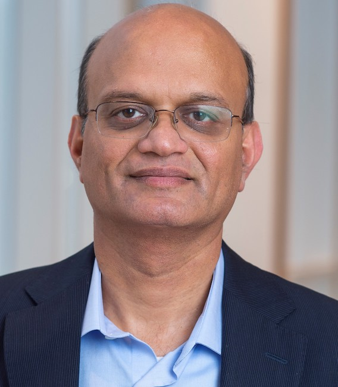
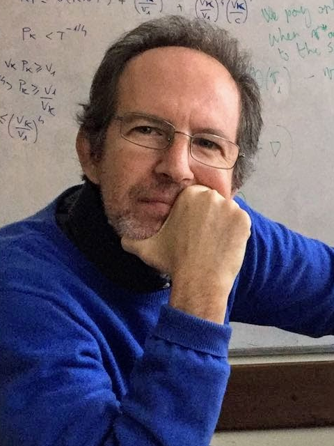
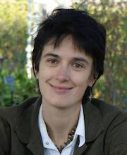
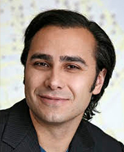

-

Aravind Srinivasan
November 12, 3pm CET
Title: Fairness in AI and in Algorithms
Aravind Srinivasan is a Distinguished University Professor of the University of Maryland. He is an elected Fellow of six professional societies: ACM, IEEE, AMS, AAAS, EATCS, and SIAM. His research interests include algorithms, combinatorial optimization and their interface with machine learning.
-
Bill Dally
November 19, 4pm CET
Bill Dally is Professor (Research) of Computer Science and of Electrical Engineering at the Department of Computer Science at the Stanford University and Chief Scientist at Nvidia.
-

Nicolo Cesa-Bianchi
November 26, 3pm CET
Title: Cooperation in networks of learning agents
Nicolo Cesa-Bianchi is a professor of Computer Science in the Department of Computer Science and the Data Science Research Centre of University of Milan.
-

Mihaela van der Schaar
February 17, 2021
Mihaela van der Schaar is John Humphrey Plummer Professor of Machine Learning, Artificial Intelligence and Medicine at the University of Cambridge and a Turing Fellow at The Alan Turing Institute in London.
-

Tony Jebara
Date to be decided, 2021
Tony Jebara is Vice President of Machine Learning at Spotify.